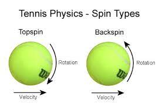
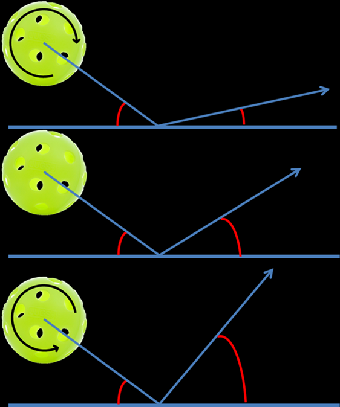
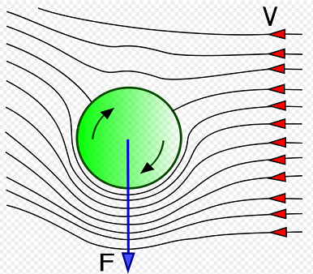

Previous: Learning to play | 🏠 Famous Coaches Home | Next: Gunther Bresnik
Tennis Fundamentals and foundations
Comprehensive unified tennis knowledge base — Fundamentals, Stroke Analysis, Reference Library, and more
Tennis Fundamentals and foundations
Ean Meyer
The fundamentals of strategy
Besides yourself, there are three necessary elements to the game of tennis:
A Ball
A Court
An Opponent
To be good at this game you need to focus on all three of these elements. To do that you need to develop “Triple Vision”. Triple vision is critical in tennis. Essentially it is the ability to see the ball, court and opponent all at the same time.
We have all heard a coach say “watch the ball” during a lesson. But you actually have to focus on more than just the ball itself to know where it is and where it is going. Your “hard focus” should be on the ball, but your “soft focus” should be on the opponent and the possible openings on the court.
If you are only looking at the ball while you are playing, you are playing as if you’re drunk. When testing potential drunk drivers, the cops always look at the eyes first. Intoxicated drivers fixate on an object and look at only one thing. The eyes of sober drivers dance around all over the place. They are looking at the person talking to them, cars going by, and other movement or objects in the environment.
The Second Fundamental: Balance
Balance is the secret to power. A body is balanced when the center of gravity is directly over the base of support, the feet. The feet need to be well grounded and the head has to be centered in order to be properly balanced. Move your head off of center and you are no longer in balance.
Balance is about the way you move before, during and after the swing. Footwork has a lot to do with balance. However, working on footwork is not the best way to actually improve your footwork. The way to better footwork is actually to work on balance. Good footwork results when you are balanced, not the other way around. Focus on improving your balance and your feet will move accordingly.
Balance and timing are interrelated. Swinging with poor timing throws you off balance and being off balance will disrupt your timing. If you’re balanced before you swing, you can use your whole body (kinetic chain) to generate power. If you’re balanced as you swing, you’re more likely to be balanced when you finish your swing which means you’ll be in a position to react better to the next ball.
When executing a stroke, the force of the swing is determined by a kinetic chain that starts in your legs and then travels through the hips, trunk, shoulders and arm. It is the key to power. For the kinetic chain to work properly, your body needs to be grounded and balanced with no disconnect between your upper and lower body.
Your posture needs to be strong with your head centered between your feet. Without proper posture you’ll lose links in your chain and, consequently, lose power.
This kinetic chain starts as a result of a phenomenon called Ground Reaction Force. Basically, your legs push against the natural force that is keeping you on the ground – gravity. This push starts a rotation in the hips which results in trunk, shoulder and arm rotation. Energy moves through your body and, when you make contact, into the ball.
Balance is the key fundamental. It is possible for you to compensate for certain inadequacies when you hit a ball. For example, timing can compensate for lack of speed. Stamina may compensate for lack of strength. Nothing however can compensate for a lack of balance. Being off balance slows your reaction time and impinges on your shots. In tennis, being balanced means you are balanced all the time, whether you’re standing, moving or hitting.
Whether swinging or punching, the force of an effective swing travels from your center of gravity to your racket head. A loss of balance at the beginning of a stroke will inhibit the body’s ability to initiate force. A loss of balance during a stroke will inhibit your body’s ability to transfer force to the racket.
Excessive waist flexion will lead to an off-balance stroke. However, when you are rapidly accelerating to an approaching ball, waist flexion is necessary for maintaining balance. Imagine a sprinter as he leaves the starting block. His upper body tilts forward. After several steps the posture becomes straighter. However, in order to maintain balance during his initial burst of speed, he must flex at the waist and lean into the direction of his movement.
An off-balance stroke will also occur when you flex at the waist without flexing your knees. Keeping the head, shoulders and hips in a vertical line will help your balance. It also reinforces head stability and a consistent contact range.
In tennis, being balanced requires moving your feet. This means bouncing, shuffling, and running to get to the ball and back to the Ideal Recovery Position. If you don’t have good footwork, you won’t have good balance. The way to better footwork is to work on balance though, not the other way around. You’ve developed your footwork’s muscle memory over a lifetime. It won’t change easily.
Good players work just as hard between shots as they do when they’re hitting the ball. They have their heels off the ground and are up on the balls of their feet, ready to move. Think about when you are running. Your heel always comes off the ground before your toe. If you are already on your toes between shots, you eliminate the extra movement and time needed to pick up your heel.
Your objective is to get your balance before your opponent even hits the ball. That’s where the “split step” comes in. If your “split step” is well timed, you’ll feel very balanced by the time you react in the direction of the incoming ball. If you’re off balance when the opponent strikes the ball, you will be late in responding to the incoming ball and can easily become “wrong-footed”.
Balance doesn’t need to be taught. It’s natural. You just need to become conscious of being balanced to become aware of it. Instead of saying: “Are you ready to react?” say to yourself: “Are you balanced?”. That will make you ready.
The Third Fundamental: Angular and Linear Momentum
The two most significant sources of power are hip and shoulder rotation (Angular Momentum) and weight transfer (Linear Momentum). These power sources are important fundamentals. Any stroke can be placed in to one of three categories. These categories are based on the stroke’s most significant source of power.
Swinging strokes (ground strokes, serves, swing volleys) use angular momentum where hip and shoulder rotation is the most significant source of power.
Punching strokes (volleys, half volleys, difficult returns) use linear momentum where weight transfer is the most significant source of power.
Some strokes require a balanced combination of both sources (approach shots and high volleys).
In angular momentum, the hips and shoulders are literally the central gears of the swing system. An efficient swing is a series of rotational movements that flow in sequence and balance is critical to initiate this rotation. The feet must be in contact with the ground, and there cannot be a disconnect between the upper and lower body. With the hips and shoulders the central gears, the muscles between the hips and shoulders are significant. The swinging movement begins with the muscles of the trunk. Because of the elastic action of the muscles between the hips and shoulders, a relatively small degree of hip and shoulder rotation can account for a high proportion of swing force.
The hips and shoulders are not efficient power sources for all strokes though. On a low volley, hip and shoulder rotation can be detrimental. On this shot emphasis should be placed on weight transfer, or the use of linear momentum.
It is critical for an aspiring high-performance player to understand these power sources. As a player you want to be efficient to ensure a long career in tennis. Efficiency means effective results with little waste of energy. So many great players don’t reach their full potential or careers are cut short due to injury because this fundamental was neglected or not properly trained at a young age.
This post follows up on last Monday’s post as it is critical for players and coaches to understand the roles of the hips and shoulders. The hips and shoulders are literally the central gears of the swing system. Your swinging movement begins with the muscles of the trunk. As they rotate the generated force works its way both up into the shoulders and down into the legs.
Muscle is required to initiate hip and shoulder rotation, and even more muscle is required to translate the generated force into efficient racket movement. So, if all this force is required, why aren’t tennis players more muscular? That’s because there’s a distinction between the force generated by the contraction of muscle and the force provided by the elastic action of muscle. Tennis swings require muscle elasticity, like a rubber band being stretched and released, rather than muscle contraction.
Another very important thing to understand is that in order for the trunk muscles to fire effectively, the forward rotation of the hips must precede the forward rotation of the shoulders. There is in fact a lag between hip and shoulder rotation that creates a stretching in the muscles of the trunk followed by an explosive snapping action of the shoulders. Increasing the total amount of hip and shoulder rotation will NOT necessarily increase the force of the swing. The amount of lag between the rotation of the hips and the rotation of the shoulders is more important than the total amount of rotation. This is the reason that the semi-open stance is so critical.
First Foundation: Ball Awareness
There are two critical components to ball awareness: spin and height.
Spin:
Only two things make a ball land on the court – gravity and spin. By hitting harder or softer, beginners use gravity to help them vary the depth with which they place the ball on the court. Pros however use spin to control the depth of the ball, allowing them to hit the ball very hard without sacrificing placement.
The fundamental rule in understanding spin is that backspin bounces lower and topspin bounces higher. Also, backspin will tend to float while topspin will dip quickly down toward the court. Observe someone hitting with different spins. A topspin ball landing at the service line will bounce past the baseline. A backspin ball landing on the service line will bounce inside the baseline.


Magnus Force

Use backspin as your control spin and topspin as your power spin.
Height:
Generally, on a medium paced ball, the height at which the ball clears the net relates to how deep it lands in the court. A higher ball will land deep and a lower ball short. Obviously, this varies according to the speed and trajectory.
Good players can see the height of the ball as soon as their opponent hits. The very latest they see it is as it crosses the net. That’s why, on a let cord shot, a pro will often get to the ball quite easily whereas a club player watches the ball fall over for a winner.
The pro, seeing the height of the ball earlier, knew the shot would be short. While some people just naturally have good ball awareness, you can improve yours through drilling. Try the drill below and let me know how it works for you!
Zone Drill:
Divide the court up in to four equal zones starting from the net and working back to the fence. Watch your opponent carefully. As soon as the ball leaves the opponent’s racket, look at the height, and call out which zone you think the ball will land in based upon the height of the ball.
The Second Foundation: Court Awareness, Clay Courts, Hard Courts and Grass Courts.
The surface you’re playing on and how that affects your decision making is another important aspect of court awareness is. This week we’ll look at clay courts.
Clay Courts
Clay courts grip the ball so that it bounces up slowly, which favors a steady baseline style. Topspin is more effective than backspin or flat balls on clay because backspin will increase the surface’s grip on the ball, slowing it down even more. It’s not unusual for clay court matches to last a few hours. You need to be mentally and physically prepared if you want to win on clay courts.
From a physical standpoint clay players must be in peak physical condition. A long match requires a strong heart, effective lungs and leg power. The best way to develop stamina is by running to improve capacity to take in oxygen. Slack muscles will tighten during long matches, restricting leg and arm movements. Be sure to include strength training to help avoid, or at least delay, this. Finally, clay is slippery, so don’t forget to practice your sliding to avoid overrunning.
Mentally you need to be prepared to play long, tedious points and to stick to your plan. Patience is key on clay. The mental attitude you need to have is that you’ll eliminate all mistakes rather than trying to rush the match and put away winners.
Clay courts are the true test of a player’s skills and you’ll need some tactical strength to overcome your opponent on clay. Use the 7 target areas discussed in prior posts, to do something with the ball. In case you’ve forgotten, I’m talking about the deep corners, deep down the middle, the side T’s and the drop shot areas. Play steadily from the back court, use your all- court game at every opportunity, but avoid the net position unless you’re certain of success there. Pace with accuracy is important.
Use the side T’s as set-up areas on ground strokes to maneuver the opponent outside the doubles alley. A side T shot opens the court, which allows you to run your opponent a long way if you’re not able to hit a winner. If he counters your shot with his own placements, it becomes like a boxing match with both players counter punching.
Hard courts
The basic strategy on a hard court is related to the speed of the surface. The slower the hard court is, the more you follow clay court strategy. If the court is fast, the points last fewer shots. The chances of exploiting an opponent’s weakness are therefore less on a hard court. It’s also harder to hit passing shots, because the ball gets to you so much faster.
Grass Courts
Grass courts are hard and resilient making the ball bounce far and skid low. Since the ball reaches you faster, shorter preparation is required. Use slice and flat strokes to make the ball stay low. Grass is unpredictable, so, your emphasis is on getting to the net volleying. Introduce your attacking game at every opportunity. Since the surface does not allow the opponent much time to prepare, net players have an advantage.
The Third Foundation: Opponent Awareness
Most players think they should win if they play well. They give very little consideration to the opponent’s game or how to exploit it. Identifying your opponent’s strengths and weaknesses is an important skill to have. Every player’s game is like a combination lock. It’s tough to open, but with the right combination, you can unlock the secrets to success.
Scout the Opponent
Scouting takes practice just like everything else. Carry a notebook and write down what you see.
Do they have a better forehand than backhand?
Where do they make more mistakes?
Do they have a good first serve, but weak second serve?
Can they hit a good cross court forehand, but their down-the-line is weak?
How do they handle high balls?
What do they do when the ball is short – where do they hit to and what kind of spin do they use?
When you hit an approach shot, do they pass cross court or down the line?
How often do they lob and when?
How well do they return wide serves and serves into the body?
One of the most important pieces of information you can write down about your opponent is what breaks down under pressure. Players will almost always go for a shot they can depend on under pressure. If the backhand is weak, they will run around it. Movement tends to break down under pressure. Players lose their legs when they get nervous. This is a time to move them away from the center of the court by going for the corners and angled shots.
Learning the foundation of awareness of the other side of the court is a key ingredient to becoming a good player. Once the match starts, most of your attention should be on your opponent’s side of the court.
The greatest tool for exploiting your opponent is the utilization of the Two Opposites. There is a pair of opposites for everything in tennis. Use them to uncover your opponent’s weakness and then show your opponent that you’ve discovered it. It will make your opponent lose confidence and swing the match in your favor immediately. The trick is to find out which your opponent has trouble with:
Forehand or Backhand?
Volley or Ground strokes?
High shots or low shots?
Hard or soft?
Wide or right at him?
Running him or giving him time to hit?
Deuce or ad court?
Cross court or down the line?
Your opponent may have a great low forehand but have real trouble with a high ball.
A common pattern is a player who likes a hard ball to his forehand and a soft ball to his backhand. So, a frequently used tactic would be to hit a slow ball to the forehand and to blast everything to the backhand.
If your opponent cannot cope with a high backhand, hit high looping shots to the backhand.
If they are slow, make them run.
Tall player? Hit the ball at them and use low slices.
You shouldn’t play a certain way just because that’s how you like to play. Don’t hit what is Convenient, hit what is Necessary.
Strategy: Fourth Foundation: You
Your Strengths
Most players don’t know what having a strength means. You may have a great forehand, but, if as soon as your opponent approaches the net you hit the bottom of the net, your forehand is not a strength. If you can serve 120 mph, but at 5-5, 30-40, you usually double fault, your serve is not a strength. So, first and foremost, a strength is determined by its reliability under pressure.
A strength is also determined by its adaptability and creativity. You may be able to overpower most opponents with your serve, but what happens when you come up against a great returner who is able to neutralize your big serve? Now you need to consider better placement, depth, spin and height. The adaptability of your serve is, what is important, not how strong or fast it is. Many players don’t understand this and they will keep going for the 120 mph serve and get broken by a great returner.
The same thing applies to your forehand. Some days it won’t be as reliable as others. A crosswind may disturb you or your timing may be off one day. Again, adaptability is key. If your forehand is truly a strength, you should be able to adapt to the situation. For example, you could adapt your game and play more up the center of the court.
A strength is also determined by its creativity. Top players get very creative with their strengths. They will open the court with angles, dip the ball down at the approaching opponent’s feet, or maybe flick a topspin lob. This creativity is almost always related to an “educated wrist”.
The “Adapt or Die” drill is a great way to work on this creativity. Stay inside the baseline and have your partner hit all kinds of balls at you – high, low, fast, slow. Don’t back up at all. Adapt to what’s being thrown at you. Practice it often enough and this practice becomes permanent.
Movement: Leg Lapse and Beating the Ball to the Bounce
Because your lower body does the exhausting task of moving you from one shot to the next, it is easy to experience “leg lapse” during execution. A leg lapse causes the upper body to compensate for the loss of leverage resulting in a stroke that is off balance. It means your body has an inefficient base of support due to poor footwork or knee flexion.
Fatigue and laziness are the causes of “leg lapse”. The most common “leg lapse” occurs when a shot is wide to either side of the body and you simply “reach” for it instead of moving your feet. The second most common leg lapse occurs when a shot is low and you flex at the waist without flexing the knees. The best way to avoid fatigue and laziness is to condition your lower body.
Beat the ball to the bounce
The difference between getting to the ball on time and being early is the difference between mediocrity and winning. Early preparation allows you to be relaxed and play on balance.
There are 2 types of players: Anticipators and Chasers. Anticipators react as the ball leaves the opponents racket and sometimes even earlier. Chasers wait for the ball to get to their side before they react.
Beating the ball to the bounce is the essence of early preparation. You and the ball are in a race and the finish line is the bounce. You want to get to the bounce before the ball does. This is a concept few players understand. Most players move at the same pace as the ball. Great players attempt to move at double the speed of the ball.
Achieving Optimal Performance: Winning vs Performing – 1st in a series
“When the Great Scorer comes to write against your name, he marks not that you won or lost, but how you played the game” –Grantland Rice
We live in a highly competitive society that is obsessed with winning. Most players experience tremendous pressure, fear and anxiety generated by an overwhelming obsession to win. Without realizing it, we pass this on to our children starting from the instant they’re born. Children are constantly measured with grades, win/loss records. etc. Society echoes this chase for the win with the “Thrill of victory, agony of defeat” mentality.
This approach, where winning alone is the ultimate goal, has given rise to questionable ethical and moral means in competition and has distorted the standards of success. The overwhelming desire to win, rather than succeed, can be seen played out in the anger, fear, stress and dishonesty that plagues our sports and society today. The result of our overwhelming desire to be number one can be seen in definite dysfunctional behavior patterns. Unrealistic expectations result in frustration and anger and some players seek unattainable perfection. Players with poor self-esteem blame others when things go wrong as they are unable to accept failure on their own.
As players, coaches, teachers and parents, we tend to lose sight of why we’re playing sports in the first place. Aside from being enjoyable and healthy, tennis, like many other sports, can prepare us for the challenges we will face in life. The way you meet challenges on court reflects the way you will meet them in life. Playing a sport should be thought of as a spiritual journey that combines physical and mental activities. The journey has no final destination, because you will be evolving and constantly thinking in new ways about how to play.
Winning should be a by-product of performance. As in life, optimal performance in tennis is created by a passion for what we do. Passion encourages commitment, discipline, hard work and continuous search for excellence. Optimal performers strive to be the best they can be every day. They are more interested in how they’ve played the game than the outcome. Pressure situations are challenges, not threats for them and they are not afraid to take risks. Rather than becoming discouraged from losing, they become motivated to improve.
If you want your kids and players to succeed, stop focusing on the importance of winning and encourage them to perform.
Mental: Achieving Optimal Performance – 2nd in a Series
Belief: “Whether you think you can or think you can’t, you’re probably right” – Henry Ford
In the 1950’s the world believed it was humanly impossible to run a mile in less than four minutes. In 1954 Roger Bannister became the first person to break this barrier with a time of 3 minutes 59.4 seconds. Once this barrier was broken, other people started to believe they could break it as well. Within eighteen months of Roger Bannister breaking the barrier, the sub four- minute mile was achieved by 45 other runners.
The mind is the most powerful thing we have going for us. We can use the power of our minds to fulfill our dreams or set the power of our minds aside and accept mediocrity. Most people in the world don’t expect much, so they don’t give much and don’t get much. Even talented athletes settle for less. Why? Different reasons, but mostly because of negative input from others.
In an effort to save us from the pain of failure, well meaning coaches, teachers and even parents often tell us we don’t have what it takes to become the best, make it to a pro level, etc. Players start to doubt their own abilities when they hear these negative messages every day. They stop believing in themselves and develop a poor self-image. Low self-esteem is probably the biggest obstacle in achieving optimal performance.
The only limitations that exist are those we place on ourselves or let other people place upon us. Once the mind believes “I can’t”, you have sabotaged all efforts to reach your goals. To become an optimal performer, you have to renounce your restrictive beliefs about what you can and cannot accomplish as a player. One of the marks of a good coach, parent or teacher is the ability to inspire their players to go beyond preconceived limitations. They challenge their players to move out of their comfort zones by putting them in challenging situations. They build their self-belief by communicating two very important messages: “I believe in you” and “You can”.
Building self-belief requires a commitment to pursue excellence in everything and a refusal to settle for mediocrity. Challenge yourself daily to do the impossible. Surround yourself with friends and family who support your dreams and believe in you. Emulate athletes you admire and look up to. Use visualization and affirmations to build your confidence along the way.
In the Art of Strategy, R. L. Wing says: “Your inner opponent’s greatest advantage is your lack of belief in your ultimate triumph”. Do not doubt yourself or your ability to succeed. What you believe you will achieve. Align yourself with the belief “I can”, and your power as an athlete, awareness that you have unlimited potential, will start.
One thought on “Mental: Achieving Optimal Performance – 2nd in a Series”
Enjoying reading your entries. I’m a recreational “athlete” I suppose. 15 years of skiing, 11 of figure skating, 4.5 of horseback riding, and now just started tennis. I have found “I can” very important in my various recreational pursuits. While every goal may not be achieved every time, “I can” is what has helped get those I have. The rest just is – it’s a journey, a road…whatever. When one is older like me, the road is a reward in itself.
Achieving Optimal Performance: Positive Thinking – 3rd in a Series
Positive Thinking
“The mind is like a fertile garden, it will grow anything you wish to plant, beautiful flowers or weeds. Do not allow negative thoughts to enter your mind, for they are the weeds that strangle confidence”. – Bruce Lee
Negative thinking creates mental and physical resistances that greatly hinder your performance, on and off the court. Each of us carries around a mental blueprint of self that is based on a rigid belief system formed by past performances. Even the best players carry around internal signs that say things like: “Your serve is weak”, “You can’t handle pressure”, etc.
These deeply ingrained beliefs and attitudes can be changed through the power of positive thinking. A major part of positive thinking is having a positive self-image. In the Inner Game of Tennis, Tim Gallway writes, “I know of no single factor that more greatly affects our ability to perform than the image we have of ourselves.” Self image is an ongoing conversation within our minds.
The voices in the conversation are the voices from the people who raised you, telling you what you should think about yourself. In addition to the messages you received as a child, you also have messages you receive as an adult from loved ones, bosses, colleagues and even the media. All of this adds up to a lot of unproductive ways of thinking.
Because self-esteem is something that you have learned, not some sort of innate genetic trait, it is possible to retrain your thoughts. How? Positive thinking conveys the language of affirmation to the body. Affirmations are strong, positive statements confirming either what is already true or has the potential to become true. Notice how much stronger you feel when you replace “I hate” with “I love”, “I can’t, with I can”, and “I won’t, with I will”. Write these affirmations down on index cards and place them in an area where you see them on a regular basis, like the bathroom mirror or in your tennis bag.
You have to stop letting other people have control over the way you think about yourself. Learn to make your own choices of how you perceive yourself. Nobody is in a position to make judgments about you, because nobody knows you like you do. As soon as you shut all critical voices out, including your own, your self image will improve. You will start to feel positive, accepted, and significant. Perceive yourself through your own eyes, not the eyes of people who judged you as a child. Move away from negative restrictive thinking and into close harmony with the reality of positive possibilities.
Allowing yourself to think positive does not mean you’re ignoring the difficulties of an event or circumstance. Positive thinking is self-direction, not self-deception. Life’s difficulties and negative occurrences often become lessons that show us how to forge ahead.
Achieving Optimal Performance: Relaxation – 4th in a Series
“The mind of a perfect man is like a mirror. It grasps nothing. It expects nothing. It reflects but does not hold. Therefore, the perfect man can act without effort” – Chuang Tzu
Most of us truly believe that if we try hard enough, our efforts will be rewarded. Players and coaches push to the max for success. Thinking it will help bring out the best in a player, coaches and parents often say things like: “ Give it all you’ve got” and. “I want a 100% effort”. Rather than elevating a player’s performance, these “going all out” attitudes create enormous tension, stress and anxiety that in fact impede performance. An athlete’s optimal performance occurs when their physical, mental and emotional selves are relaxed and working harmoniously together, both prior to and during a performance.
Do not try too hard. Too much concentration defeats itself. Trying is the opposite of trusting. The instant you become conscious of trying and making an effort, that very thought interrupts the flow and the mind blocks. There is an ancient Zen riddle that says: “If you seek it, you cannot find it”. Bud Winter, coach of many Olympic athletes developed what he called the “Ninety Percent Law”, which says: “Running or performing at ninety percent effort stimulates relaxation and results in faster movement, more strength, sharper vision, less fatigue and improved sense of well-being.
If your mind is fixed on victory or defeating your opponent, you will not function automatically. The less effort you have to expend on thinking about what to do and how to do it, the faster and more powerful you will be. If your mind is fixed on either your own victory or on defeating your opponent, you will be unable to function automatically. Too much concentration defeats itself. If you truly relax and allow the unconscious to do it’s share instead of working the unconscious overtime with unproductive thinking and stress, concentration can become effortless.
In athletic environments where people take themselves and their sport very seriously, it can often be difficult to relax. So how do you achieve relaxation and effortlessness? After you have practiced something for a long time, it becomes second nature. It’s like operating on automatic pilot. Think about your best practice sessions. I bet you make some of your best serves on a Sunday afternoon when you are all by yourself on one of the back courts, relaxed, with some music playing and not a care in the world. You are not thinking about making big serves, they just happen. As you compete, remember how relaxed those serves felt.
Relax to achieve the max. Tension and stress are obstacles to achievement. When you begin to feel tension, think of the image of water. Water is soft and yielding, yet strong. In the great scheme of things, no loss or setback will ruin your life. Create a mental environment for yourself where you take your task seriously, but not yourself or the outcome.
Achieving Optimal Performance: Visualization, 5th in a Series
“If an athlete can picture in advance each movement of an event exactly as it should be, in a relaxed meditative state, the greater will be the chances that he or she will carry out those movements during the actual performance” – Jerry Lynch
Visualization is an active form of meditation in which you relax and choose to view images in your mind’s eye that will influence your emotions and energy. Our central nervous system does not understand the difference between real and imagined events. It sees and accepts all images as though they were real. So what you see in your mind’s eye can strongly influence your beliefs and achievements.
Imagery is a powerful tool. One of my favorite stories about the power of visualization concerns a navy pilot who was incarcerated in Vietnam for many years. To help himself stay sane, he drew 6 lines on a two inch-wide flat stick to resemble the neck of a guitar. He had never played guitar. His cellmate, who did play guitar, taught him in their free time using that stick. For a few hours a day, he was taught the finger positions and sang the notes. Every day he visualized the chords and heard the sounds in his mind. By the time he was released he had become an accomplished guitarist.
Perhaps one of the most convincing pieces of research to verify the power of imagery or visualization was an experiment performed by two groups of basketball players who were trying to improve their free throw percentage. One group shot one hundred free throws every day for three weeks. The other group simply visualized doing the same. The study found that the visualizing group showed significant improvement over those who actually shot the ball.
In sports, the actions (losses and victories) are all the result of visions and images that the players carry with them. If you have an image of missing a shot, you create tension and anxiety that in return contributes negatively to your performance. On the other hand, if you visualize success, you create an inner state of calm, confidence and relaxation that contributes positively to success.
Almost all successful athletes use a system of visualization. Billie Jean King said: “Before the second serve, I visualize it going in. I never permit myself to think for even a moment about the possibility of a double fault”. Visualization works because it acts like a dress rehearsal. It is a form of practice that makes you familiar with the script for the task ahead of you. When the time comes for the actual performance, you have a sense that you already experienced this moment, and everything seems familiar.
Visualization is a learned skill and one you can develop on your own. Learning to visualize is essential if you are going to become an optimal performer. When you practice it regularly, it will enable you to perform up to or beyond what you perceived as your potential. Visualization clears the mind of interfering, negative images that block your efforts to succeed by replacing them with images of success. Positive images relax the mind and body and allow you to perform well.
Achieving Optimal Performance: Focus, 6th in a Series
“ Focus your thoughts and actions on one small aspect of the present, and you will create personal power” – Chungliang Al Huang
Focus is the process of narrowing your concentration in order to eliminate unproductive or distractive occurrences. It means keeping the mind here and now. By focusing, you can fine-tune your attention so that you stay on the moment. In the Tao of Leadership, John Heider states “Expeditions into distant lands of one’s mind distract from what’s happening. By staying in the present, you can do less, yet achieve more.”
As the mind is kept in the present, it becomes calm. Concentration becomes relaxed. Jerry Lynch, in his book Thinking Body, Dancing Mind, teaches us that “Relaxed concentration is the supreme art, because no art can be achieved without it, while with it, much can be achieved.” When Soren, a sixty-five-year-old ultra distance runner reached the finish line of a hundred mile marathon, a reporter asked him how someone his age runs a hundred miles. “I don’t run a hundred miles. I run one mile a hundred times” he said.
Developing the power to devote full attention to the present is one of the most valuable skills in achieving optimum performance. The mind naturally wants to predict the future or mull over the past. We want things to be different from the way they are, and that pulls our minds into an unreal world. But this only puts pressure on you and affects your concentration. The only way to make something positive happen is to focus on it in the present moment. Concentrate on what you have control over. You can’t control your opponent, the weather or the crowd. But you can control your own performance.
To learn to focus, you must practice. The key to achieving focus at will is to choose a small aspect of your activity and dwell on it. Whatever you choose will involve one of three senses: seeing, hearing or feeling. The problem is the mind has difficulty focusing on a small thing for a long time.
There are two things a player must know on every shot: where the ball is, and where the racket is. It is easy to see the tennis ball, but how many players see the exact pattern made by the seams of the ball as it spins? When looking for the pattern made by the seams of the ball, you will discover that you see the ball much better than when you are just “watching” it. Because it is such a subtle thing, it engrosses the mind completely. The mind is so busy watching the seams of the ball, it forgets to try too hard. The best way to maintain focus, is to assume you don’t know much about the ball, no matter how many balls you’ve hit. Not assuming you already know is a powerful principle of focus.
Most players see where the ball is, but very few know where their racket heads are, especially when they start to move around. To maintain focus, try saying the following mantra: “Ball”, “Bounce”, “Hit”. Say “Ball” when the opponent strikes the ball, “Bounce” when it bounces on your side and “Hit” when you’re hitting. The words will keep you in the present and make you feel calm. It is difficult to say these words and worry about the score at the same time.
It is easy to lose focus in between points. The best thing to do is to focus on your breathing. Notice that each inhalation carries oxygen that will bring calm throughout your body. As you exhale, notice that your breath carries away not only carbon dioxide, but also all your tension and anxiety.
The secret is not to think. That means quieting the mind so that the body can do instinctively what it’s been trained to do without the mind getting in the way. The only way to keep the mind in the present is through practice. Train the mind to focus through things like meditation, yoga and visualization exercises
Achieving Optimal Performance: Centering and Reflection, 7th in a Series
“What is skillfully established will not be uprooted. What is skillfully grasped, will not slip away. Thus, it is honored for generations” – Tao Te Ching
Centering
Optimal performance is greatly influenced by your ability to remain centered within. Centering means remaining true to yourself and performing up to your capabilities, regardless of the changes in your external world. Centeredness is like a deeply rooted tree. When attacked by hostile forces, the tree withstands them, remaining unmoved as you will when you are centered within.
Centered athletes do not measure identity and self-worth by result, score or rating of performance. They see victory as just another component of playing the game. Therefore, they enjoy accolades and rewards more fully as they are by-products of excellence rather than an end in themselves. We are never as great as our greatest victory or as bad as our worst defeat. Knowing this helps keeps things in perspective.
Reflection
As an athlete you’re constantly bombarded with external input. You have to be able to know and interpret such data to grow and develop into who you want to be. The continual dramas of life and tennis can obscure your awareness of where you are, where you come from and where you are going.
Practicing silent reflection or inner stillness can help you better understand yourself, your perceptions and impressions and the world around you. Periodic reflection helps you assess your training and competitive performances. It helps you see what you need to change in your game and in yourself. In turn, your timing will improve so that you minimize your risk of error, setback and failure.
Your tennis performance will have its ups and downs, it’s a natural cycle. Nobody can compete without fluctuations in performance, but much is to be gained from reflecting upon these natural cycles. By aligning yourself with these rhythms, you gain personal power over your performance. If you are at a low period, accept it and you will stop fighting it. You will notice that life is more meaningful when you take time to reflect.
Movement: Anticipation
Since most moves in tennis are only a few yards, it seems like raw acceleration should be the determining factor in getting to the ball. But, of far greater importance, is anticipation and the ability to change directions without losing balance. Anticipation means knowing early where your opponent is likely to hit and being ready to respond to that.
The first prerequisite for superior court coverage is to know where your IRP (Ideal Recovery Position) is for every opponent and every situation. The IRP is not just a geometric function of where you hit the ball, it also depends on your opponent’s strengths and weaknesses.
Secondly, you must time your strokes, not your body. This means you must arrive behind the bounce before the ball does. If you arrive late, your momentum will take you beyond contact and affect your recovery. Many players hit well, but their movement back is slower than their movement to the ball. It should be the same speed. Recovery is in fact part of your swing. Your stroke is not completed until you’re in position for the next shot.
Thirdly, you must anticipate your opponent’s shots by keeping your eyes glued on them. Become sensitive to small cues which give away the direction of the next shot.
Continue to recover while keeping your eyes fixed on your opponent’s body language before making a final decision about where they are going to hit. You will reach a moment in the decision process where you must pause for a split second. This is the instant in which one more step toward recovery will leave you vulnerable to being wrong-footed. It is important that you not be running at the instant of decision. Slow down like a butterfly before exploding again like a bee. Your split step, or “flow split” and bounce out of the ready position can be done quickly, once the timing has been mastered.
Strategy Third Foundation: Opponent Awareness, Busting a Strength
Most strategy involves finding an opponent’s strength and denying him a chance to use it. The one exception is when you decide to bust a strength. Some players lose confidence when you break their strength down. Boris Becker was such a player on the ATP tour. His forehand was amazing, but it fell apart as soon as he lost a little confidence in it.
Very few player’s strengths are perfect in every way. They either hit spin or flat or they have great disguise. If you want to bust a strength, you can’t just pound the ball to the one side. You have to use “opposites”. Start with topspin, then throw in backspin. Make your opponent run and then “float” one at them. Here’s a great example from the pros. Steffi Graf’s forehand was a huge weapon. Yet, Martina Navratilova played her forehand all the time to force her into the center of the court. Then she would work her backhand with the approach shot.
Some player’s greatest assets are their legs. When playing a good runner, try to hit where they just came from, or hit down the middle of the court.
Six Steps to Better Footwork
Step One: Bouncing
Keep your feet moving. Stay light on your feet (Butterflies). It’s like leaving your car in “idle”. You can generate speed more quickly while using less energy.
Step Two: Split Step
Probably the single most understated and underrated lesson in the art of moving is the split step. The split step can both get you two steps closer to every wide shot as well as out of the way of those balls that tend to jam you up.
Step Three: Sprint Step
Your goal for each shot is to “beat” the ball to the bounce. Race to the ball. When sprinting a long distance, the key is to have a wide balance base. The first step is to “drop” the foot nearest to the ball in before the outside foot crosses over.
Step Four: Stutter Step
Use the stutter step as you near the ball in order to set up your final position before the stroke. Run with big steps to get close to the ball, then use smaller steps as you near the bounce. Your steps ought to produce a squeaking noise on hard courts.
Step Five: Impact Step
This is the final step before you hit the ball. Make sure the heel of the foot strikes the ground first, not the toe.
Step Six: Crossover Step
After executing your shot, your trail leg swings around and crosses over as it strikes the ground.
Obstacles to Optimal Performance: Fear
“All things in the cosmos will be aroused to movement through fear. This movement will be cautious, and cautious movement will bring success” – 1 Ching no 51
Fear is a natural emotion. It’s a survival instinct and indicates that you need to be alert. Trying to fight or force away fear creates a counter force that makes you tense and anxious and interferes with your performance. What you resist will persist. Because fear is a natural part of life, it doesn’t go away. It can paralyze you or you can use it to give you the opportunity to assess the risk you’re facing and prepare for it properly. Fear is a friend that you must embrace.
If you feel endangered or fearful, ask yourself why you’re feeling that way. Have you prepared well for what you are doing? Are you thoroughly equipped? Let yourself be afraid. You can actually defeat your fear by blending with its force. Alan Watts said: “The other side of fear is freedom”. Remember that you are not alone. Every athlete, even the greatest of the great, has fear.
In the Western world we learn that “winning isn’t everything, it’s the only thing” (Vince Lombardi). Many coaches, teachers and parents believe that losing represents failure. This mentality is responsible for much of the fear of failure that athletes experience at all levels.
Failure cannot be avoided. The greatest of the great have failed at times and so will you. You perfect your game through adversity and failure. Look at failure as a lesson from which you can learn. Seeing failure as an opportunity for improvement makes it more tolerable and will help you relax.
As a child you learned from repeated failures to master one of the most difficult and challenging of skills – walking. You repeat falling, bumping into things and crying until you have it down. You learn from each mistake and receive encouragement from your parents until you can walk. For some reason when we get older we start to tell ourselves we are “no good” when we fail. The support we used to get from our parents as babies turns into judgment in many cases.
The challenge is to see things as they are and to accept the truth about them. Do not fight failure. What you learn from setbacks or defeat is more valuable than a victory. Each experience we have yields us a treasure of knowledge if we choose to see and accept it that way.
Mental: 2nd article on the Obstacles to Optimal Performance
Tips for Handling Fear
Take a look at fear and ask yourself “What is the worst that could happen if I followed through on this fear-producing situation?” If you can live with the worst-case scenario, you can go beyond your fear.
Vigorous exercise coupled with relaxation or meditation helps to put fear into perspective.
Understand that it is impossible for anyone to be thoroughly competent and achieving all the time. Failure is part of the process of living.
Patience and persistence will bring you from failure to success in most ventures.
Real failure is the unwillingness to take a chance.
See failure as an opportunity to learn. How would you do it differently next time?
Expectations with regard to outcomes are setups for failure. Establish strong preferences instead.
Myths about Fear
Myth 1: If you work hard enough you can avoid failure. Not true. The best of the best couldn’t escape failure, how can you?
Myth 2: Failure is worthless. Not true. Failure is a necessary prerequisite for success.
Myth 3: Failure is devastating. It is disappointing yes, but generally the feelings that result from setback and failure are exaggerated.
Obstacles to Optimal Performance: Fear of Success
According to Sigmund Freud, some people have difficulty dealing with the happiness of fulfillment. Some athletes who readily claim they desire success subconsciously sabotage their own efforts. This may manifest as a pattern of becoming ill or injured just when they are on the brink of making major breakthroughs.
Because of the enormous stress associated with success, athletes’ performance suffers. They become erratic and inconsistent. Success carries a lot of pressure such as repeat performances, envy, sniping etc. It becomes an albatross fort them – so weighty and strangling that they avoid it at all costs. The truth is, in all of society, everyone who tries to succeed experiences pressure and tension. By breaking away from their stereotypical roles, many feel guilty for achieving beyond the limits society has conveniently ordained.
If you knew you were quite good at something, you would feel compelled to act on it, or else feel guilty about not developing that potential. But maybe you would rather not act on it. After all, developing this aspect of yourself and living up to that standard will probably require hard work. Becoming totally committed to excellence often means taking time away from family and friends. It’s a decision that can have serious repercussions. As a result, you may choose a road that avoids success.
But, if you turn your back on your talent, you create another pain to contend with: you must grow old constantly wondering how good you could have been. The choice is yours to make. Being aware of this choice may make it easier for you to determine what is more important. If you think you’ll have regrets later, go for it now while you’re still capable.
Rehearsed vs Improvised Strokes
In a match you cannot think about or experiment with your strokes. Practice is the time to experiment, but you should mostly rehearse your strokes, so they become familiar and dependable. A rehearsed stroke is acquired through practice at a comfortable pace. An improvised stroke is a spontaneous reaction that occurs during match play or fast paced drills.
Do not rely on your ability to improvise. Rehearsing your strokes will never make you unimaginative. To the contrary, the more situations you rehearse, the more imaginative your range of options.
A tennis stroke is not a collection of disconnected actions. An efficient stroke is a series of actions that flow in an instantaneous sequence. Your muscles must be appropriately relaxed in order for the separate actions of the stroke to flow. Whether swinging or punching, the force of an efficient swing travels from your center of gravity to the racket head in an instantaneous sequence. A loss of balance at the beginning of the stroke will inhibit your body’s ability to initiate force. A loss of balance during the stroke will inhibit your body’s ability to transfer force to the racket.
Strategy, the Fourth Foundation: You
Just like it’s important for you to understand your opponent’s strengths and weaknesses, you also need to understand your own. Don’t try to do what you’re not capable of doing. If you’re incapable of hitting a power serve, why try it? If your backhand is much weaker than your forehand, run around it. If your movement is suspect, why try to play a running game?
When assessing your limitations there are a few specifics to look for:
Do you have confidence in your 2nd Serve?
How well can you place your serve?
How well do you return crosscourt down the line and down the middle deep?
Can you hit the 7 target areas?
Can you apply different spins?
How well do you move laterally, diagonally and up and down?
Game Plan
Most tournament players believe that if they play well, they should win. To beat good opponents takes more than just playing well. However, you have to plan the work and work the plan.
A game plan is a set of strategic guidelines to exploit your strengths and your opponent’s weaknesses. A good plan should also minimize your weaknesses and your opponent’s strengths.
Keep the plan basic:
Strengths, weaknesses, patterns and favorite shots under pressure. For example, if you know your backhand is weak, your plan should be to run around it as much as possible. If your opponent’s backhand is weak, your plan will be to run them wide to the forehand, thereby opening their weaker backhand side.
Changing your Plan
You have to know when to change your game plan. The ability to change your plan to suit the opponent and situation may be the most important quality of a good tennis player. When you are losing, the first thing you have to determine is: am I just playing lousy or is my opponent playing well? Change your plan before the set is over. If you are down 4-1, it’s time to change. Don’t wait till it’s 6-1, 2-0, then it’s too late to stop Momentum. You should change the plan when you’re in a losing pattern. For example, if you’ve been broken twice, find a way to upset the momentum.
Percentages vs Priorities
If percentage tennis suggests you approach down the line to the backhand, and the opponent’s backhand pass is a weapon, is it percentage tennis? Where and when you hit a shot is determined more by priorities than percentages.
Your overall game plan is driven by priorities and should change with every opponent. What may be a high priority shot against one player, is suicide against another?
Priorities determine that you go to your opponent’s weaknesses. If they don’t have a weakness you can exploit, then you go to the percentages.
Your own strengths can be your priority. Forget your opponent if your strength is stronger than his strength. You don’t have to worry about percentages at all.
Create A Vision of Who You Want To Be
1st in a series of articles on “The Ingredients to Become Successful”
Your mind is the most powerful thing you have going for you. You can choose to use the power of your mind to do exactly what you want to do or set the power of your mind aside and settle for less. Most people in life don’t expect much, so, they don’t give much and don’t get much. Winners are not born winners like many thinks. There is no genetic code in you that will determine who you will be.
Einstein used to say: “Imagination is more important than knowledge. What you need is skill, not knowledge. The skill to proactively use your imagination. Once you learn this skill, the first task is to begin imagining the vision of who you want to be”.
Earl Nightingale said: “We literally become what we think about most of the time”. As you see yourself in the heart of your thoughts, so you do become. What you see in your mind’s eye is what you get: Nurse or prostitute, alcoholic or athlete, drug pusher or teacher, nobody or somebody, loser or winner. Each of us becomes that make-believe self we have imagined and fantasized about.
Arnold Schwartzenegger, after winning his last Mr. Universe bodybuilding title was asked by a reporter what he planned on doing next. “I plan on being a number one box office star in Hollywood”. And how was he planning on doing this? “The same way I planned my bodybuilding career. First you have to create a vision of who and what you want to be. Then you have to live your life into that picture every day”. Notice he didn’t say he would wait for a vision, he said: “I will create a vision”.
Neil Armstrong’s vision began as a child. In an interview immediately following his historic first step on the moon, he said: “Ever since I was a little boy, I dreamt that I would do something important in aviation”. Fascinating that the thoughts of a child can shape a destiny.
So, if becoming successful at something is as easy as “deciding” to do so, or “creating a vision” of who you want to be, why don’t more people do so? The road to the top is a long, hard grind. It involves sacrifice and commitment. Most people are not prepared to put the time and effort that it takes into it. As kids we all have dreams of who and what we want to become. As we get older, these dreams are usually replaced by “reality”. There are other reasons for people not following their dreams:
Lack of support – in reality society does not want us to achieve above the limits that it has conveniently ordained. Most people don’t want you to become more successful than what they are. In the process you consistently receive negative messages from others about your ability to rise to the top. This affects your confidence and self-esteem, and you stop believing in yourself.
Lack of opportunity. Many people don’t follow their dreams because of lack of resources. You need enough money to pay for coaching and to be able to travel. Many times, people have to relocate to a different area to get the services they need. This is not always affordable.
Fear. Dealing with the pain of failure is the one factor that holds most people back from going after their dreams.
But, believe it or not, the main reason most talented people don’t commit to fulfilling their visions, is laziness or lack of desire.
There are basically 3 groups of people in the world. Your job is to create a vision of which group you want to belong to:
First there are the Spectators. They are the majority who watch life happen as bystanders. They avoid the main arena for fear of being rejected, ridiculed, hurt or defeated. They prefer not to get involved and would rather watch others perform. Most of all, Spectators fear winning. Winning carries the burden of responsibilities and setting a good example. That is too much effort for most, so, they watch others do their thing. They prefer to be on the opposite side of the TV screen.
Another large number of people are the “Losers”. Losers are not the millions of destitute people going to bed hungry every night. They are people in our abundant society who never win, because everything they do is for outside recognition. They need to drive a car like…, dress like…, live in a house like…. or be someone else. Losers need anti- anxiety drugs (60 million tablets per year are consumed in the US) to cope with their daily emotional stresses. Their blood pressure jumps as they get angry quickly and defensive easily. As a result, the Loser drinks more, smokes more and pops more pills to escape.
Then there are the Winners. Winners aren’t necessarily the athletes with the trophies, or the students with the straight A’s. These are the few, who in a natural, free flowing way seem to get what they want from life. They put themselves together at work, at home and in the community. They set and achieve goals that benefit themselves and others. True winning is one’s own pursuit of individual excellence. Winning is nothing more than taking the talent or potential you have and using it fully towards a purpose or a goal that makes you happy.
Your attitude towards your potential is either the key to or the lock on your door of personal fulfillment. Most of us are unable to see the truth of who we could become. It’s hard to imagine the potential in yourself. You might want to begin expressing it as a fantasy. Think up some stories of who you’d like to be. Your subconscious does not know that you’re fantasizing. Fake it till you make it.
THE MOST DANGEROUS RISK OF ALL:
The risk of spending your life not doing what you want on the bet you can buy yourself the freedom to do it later.
Commitment
2nd in “The Ingredients to Become Successful” series
“Each great human accomplishment begins with a dream” – Terry Orlick
“The dictionary is the only place where success comes before work” – Vince Lombardi
These two statements go a long way to explain what is meant by commitment. Dreams are about ambition, desire, interest, and vision. Turning dreams into reality requires a full commitment. Commitment involves passion, persistence, determination, dedication, courage, motivation, willpower and hard work.
Passion for what you do is what gives you the energy to pursue your goals with full commitment every day. There is a saying that if you have passion for what you do, you will not work another day in your life. People with passion cannot wait to get out of bed to tackle their goals. The work is not an inconvenience. It’s an investment.
Calvin Coolidge said, “Nothing in this world can take the place of persistence. Talent will not; nothing is more common than unsuccessful men with talent. Genius will not; unrewarded genius is almost a proverb. Education will not; the world is full of educated derelicts. Persistence and determination alone are omnipotent.”
Almost everybody involved in sport has a dream. Why do some people work hard in pursuit of their dream while others give up or simply don’t try in the first place? Unfortunately, the route to achieving success is a hard one demanding sacrifice and energy. If it were easy, we would not value our achievements or those of others so highly.
Determination is drive. It is the mindset that impels you to make things happen. It is the power of your intent. Determination is a function of having clear goals, whether they are short- term or long- term goals. Those short on motivation has nothing driving them forward; no dream, no well-defined goal, no desire or need.
Commitment tends to be stronger when the motivation to achieve a dream comes from within. If you are challenged or excited by your dream, you are more likely to put in the hard work that is necessary for success. Inner drive seems to be stronger than external motivators like prizes, prestige or doing it for others. This does not mean external factors are not important. There are many examples throughout sport of outside forces providing the motivation for outstanding performances.
For many, the motivating factor is money. But this external motivation tends to boost performance only in the short – term. When you are chasing a dream that requires a long- term commitment, a desire from within is a very powerful source.
It takes courage to stay committed. Commitment is fueled by energy. The more intense your desire to be successful, the more energy you will put into achieving your goals. This will influence how often and how hard you train and your persistence to keep going, especially when things get rough. If you are like most people, your energy is diffused and spread over many areas of your life. If you want to get the best out of yourself in pursuit of your dreams, you need to harness most of your energy to that end.
With commitment it’s a case of actions speaking louder than words. You often have to train when you’d rather be doing something else. I remember Monica Seles back at Bollettieri’s asking me to set up the ball machine for her to practice angle shots on Saturdays when the rest of the kids went to the movie theatre. You may have to follow schedules you don’t like. You will have to overcome setbacks as the road to glory is seldom a smooth one. “The arrow that hits the bullseye is the result of a hundred misses” – Ancient Proverb.
Above all, you have to prepare thoroughly for those rare moments of success. You spend much more time training than competing, so, patience is important. An athlete can spend four years preparing for the Olympic Games and compete for a few minutes if they get there. On the other hand, equally committed athletes often miss major championships by fractions of a second or through injury, having spent years in pursuit of their goals.
Commitment does not guarantee success. There is however great satisfaction in knowing that you gave your best, because it takes courage to commit to being the best that you can be. The majority of people lack this courage. They hold back because of fear of failure. People who are afraid to fail never give total commitment, so they avoid the hurt and risk that results from falling short of their targets. By holding back, they have a ready- made excuse if things do not work out according to plan.
Commitment is the engine that drives you toward your dreams. After you establish where you want to go and what it’s going to take to get you there, then you must start up your engine. Setting targets or goals is a very effective way of guiding you on your journey. It gives you direction and a sense of achievement as each target is reached. Setting goals also directs and focuses your energy. It is difficult to stay motivated all the time.
Sometimes adversity sets in like injuries, slumps in performance, personal crisis or financial crisis. The athlete with both short and long- term goals is more likely to survive such a crisis. If you have no direction, you are likely to get bored, frustrated or depressed.
Remember that:
commitment is the effort and energy that goes into turning goals into reality.
the intensity of one’s commitment tends to be stronger when it comes from within, although there are external motives and rewards to encourage this internal drive.
commitment is a vital ingredient in achieving success.
goal setting is the primary strategy for directing effort and energy
It can be said of successful people that:
they know where they want to go.
they recognize where they are now.
they understand what it will take to reach their goals.
they commit themselves to getting there.
Building Confidence
3rd in a series of articles on “The Ingredients to Becoming Successful”
“Life’s battles don’t always go to the stronger or faster man. But sooner or later, the man who wins, is the man who thinks he can.” Vince Lombardi
Confidence is knowing you have the ability to meet the demands of a situation you are likely to face. When you are confident, you feel positive, optimistic, and in control. You expect to perform well. Low confidence is characterized by pessimism, doubt, anxiety, and even dread. When you aren’t confident you expect to make errors, and when you do, it confirms your doubts.
Expectations have a huge impact on performance. Players seldom exceed their expectations. In a sense, you set the scene with your thoughts and feelings, which are closely linked to your beliefs. What you believe, you become. This means that expecting something to happen actually contributes to making it happen. In the 40’s and 50’s the entire sports world believed it was humanly impossible to run a mile in less than 4 minutes.
Their limiting belief was supported by research reported in more than fifty medical journals throughout the world. In 1954 Roger Bannister challenged this belief and ran the mile in 3 min 59.5 seconds. Within the next eighteen months, forty-five runners achieved the sub four-minute mile. Once the four-minute barrier was broken, they believed they could break it also.
If your mind believes “I can’t”, you will sabotage all your efforts. You won’t do what is required to realize the goal. But, if you believe “I can”, you are setting up a path of success. The psychology of dream fulfillment includes the mindset of hope, motivation, commitment, confidence, courage and concentration. You need to renounce your restrictive beliefs about what you can and cannot do in sport. Your power as an athlete starts with the awareness that you have unlimited potential once you align yourself with the belief “I can”.
So, how did your beliefs get to where they are? Throughout your life you receive messages. These messages come in many forms – remarks, gestures, opinions etc. These messages are planted in your subconscious. Many times, these messages are negative and limiting. So, becoming aware of these messages you have stored is essential to building confidence. Confidence is learned, not something you are born with. It is largely based on the experiences you’ve had.
That is, your confidence is influenced by the successes you’ve experienced, the setbacks you’ve suffered, feedback from significant people such as parents, coaches and friends, and the amount and type of preparation you’ve done. Confidence stems from your expectation that you will perform well. Your expectancy becomes your self-fulfilling prophecy. An essential ingredient in developing confidence is learning from mistakes.
If you practice in an encouraging environment where mistakes are viewed as learning opportunities and feedback is encouraging, you are more likely to become confident. Confidence is not a steady state. It can change throughout the season, from day to day, even within a training session or competition.
Strategies to build confidence
Re-examine your beliefs.
Remember, all beliefs are learned. Take each belief and consider how it was planted in your mind. Was it a remark by a parent, coach, teacher, or a friend? Re-examine these beliefs. Often, they are inaccurate and you may not be aware of how much they affect your confidence.
Self-talk.
We all have internal dialogue. We constantly react to situations, interpret events and act out our beliefs. Self-talk is the thoughts we experience and the comments we make to ourselves as events happen. Positive self-talk motivates, affirms, and encourages. Negative self-talk tends to be critical, demeaning, and disabling.
Situation: You serve a double fault.
Negative self-talkPositive self-talk
I’ve blown itI’m playing well
How could I be so stupid?Relax and focus
I’m in trouble now I have a good serve
What you should remember is that we all encounter similar situations. It is how we react to them that accounts for many of the differences between us.
Thought stopping.
You cannot stop thinking, but you can exercise some control over your thoughts. You need to stop negative, disempowering thoughts if you are to build confidence. Thought stopping is a skill, meaning that you have to practice it to make it habit. As you train and compete, be aware of your self-talk. When you catch yourself thinking negatively, use what is known as a “cue” to stop that type of thought. A cue could be shouting “stop”, clicking your fingers or slapping yourself on the thigh. Negative thoughts will never disappear entirely. Even though they come and go, never let them control you.
This entails replacing negative thoughts with positive ones
Negative thoughtPositive thought
This is impossible This is a challenge
I feel terrible I feel ready to perform
I have to win this point Relax and swing easy
It is good to use a motivational statement like: “I can do this” or an instructional statement like: “Eyes on the ball” when you are reframing. For thought stopping and reframing to work, you need to practice until they become second nature. This is one skill successful people have developed often unknown to themselves.
Affirm yourself.
Affirmations are statements about yourself that are generally optimistic and positive. It should be clear by now that suggestions have a very powerful effect on our minds. When affirming, use the word “I”. Use positive phrases “I can do this”. Use present tense “I am calm and confident”.
Practice with purpose. The purpose of training is to meet the demands of the competition you are going to take part in. Train at a competitive pace and with purpose. Set up competitive situations in practice. It is not possible to be confident if you are not competent.
Ensure success. Experiencing success builds confidence. Sometimes you need to enter competitions where you know you will do well. Many times, tennis players want to compete “up” at the next level or age group to avoid pressure or to gain experience. Make sure you win 75% percent of your matches at the level you enter. Losing on a regular basis creates losing habits and makes you lose confidence.
When you see your training and competition program planned, you are more likely to feel confident about what you are doing. Disorganization undermines confidence.
Training partner. Train with people who are positive and have the same goals as you do. Your coach should be knowledgeable, organized and challenging. Train with people who are serious and have the same ability as you. If you train with people who are much superior to you, you can easily lose confidence when you continually compare yourself to them.
Look and act confident. Always walk tall with your chin up. Be proud of who you are. Take care of the equipment you use and the clothes you wear. Be aware of your body language.
Remember, when you are confident, you expect to perform well. Many of these expectations stem from your beliefs. If your beliefs are negative, it is vital to become aware of how they undermine your confidence. Re-examining your beliefs, using self-talk, and using affirmations are some of the strategies that can be used to build your confidence. Confidence grows with competence, and this is developed through regular and effective training and preparation.
Control
4th in a series of articles on “The Ingredients to Becoming Successful”
Competition by its nature triggers a lot of thoughts and internal dialogue. It also triggers a lot of emotions ranging from joy and excitement to fear, frustration, anger, and disappointment. Thoughts and emotions are at the root of most of our actions and behavior and therefore have a profound effect on our performance. Controlling thoughts and emotions, or using self-discipline, is critical to getting the best out of yourself in competitive situations.
Understanding and harnessing the power of thought and emotion and how this impacts your performance is a key ingredient in maximizing your potential. Many talented athletes have failed to reach their full potential simply because they could not control their thoughts and feelings. Negative thinking and emotions such as fear, anger, and anxiety destroy self- confidence and concentration and eventually weaken commitment. Not only do they affect mental fitness, but they can also diminish your physical performance. A negative internal environment creates stress and tension which can cause muscle tightness and poor coordination.
Research on the effect of words and images on the functions of the body offers amazing evidence of the power that words spoken at random can have on body functions. Science shows that thoughts can raise and lower body temperature, relax muscles and nerve endings, dilate and constrict arteries, and raise and lower pulse rate.
Learning how to control your internal dialogue then also means gaining control over both your mental and physical state.
A competitive situation, like a tennis match, is a strong trigger for a range of thoughts and emotions. Your mind is bombarded with stimuli before and during and event. How you react to external stimuli such as the event, the weather, coaches, family, and friends and internal stimuli including your own thoughts, feelings, memories and images, can determine the outcome of your match. Your mind perceives and interprets stimuli in two ways. Humans have a rational or thinking mind and an emotional or feeling mind. These two “minds” work together generating a series of thoughts based on what it sees and the emotional mind reacting to it.
For example, let’s say your opponent is on court already and warming up when you arrive at the court. Your opponent is the defending champion and #1 seed. Do your thoughts start to wander? Are you thinking something like – my opponent looks so fit. No wonder they are the champion. I hope I don’t make a fool of myself. Or are you thinking – I have trained really hard and am so prepared for this match. My opponent is tough, but I am excited to put all of my hard work into action and win.
The first set of reactions are based on fear. Fear of looking foolish and self-doubt can lead to anxiety which of course can lead to getting uptight and nervous. In this situation most players will play it safe and let their opponent take control of the match.
In the second set of reactions, the player is coming from a position of strength, rather than fear. This player is excited for the challenge and calm and ready to play. They are more likely to dictate play rather than just reacting to their opponent.
It takes practice and awareness to gain self-control over your thoughts and emotions. Consider how you react when faced with a competitive situation mentally, emotionally, and physically. Once you become aware, you can try to exert some control.
You cannot prevent yourself from thinking and feeling, but you can, with practice, manage these processes so they can help you perform at your best.
Here are a few strategies to help control thoughts and emotions:
Calming Techniques
Breath Control
Breathing is a bridge between your mind and your body. When you are calm and relaxed, your breathing is quiet and easy. When you are angry, tense or upset, you tend to hold your breath or take rapid, short breaths. You can use deep and slow breathing to calm the mind and body. Exhalation, particularly long slow breaths, stimulate the part of the nervous system that calms the body.
Finding Calm Under Pressure
During competition, there will be times when you need to calm down. These include critical times during the match like set points, after a major error or when you are trying too hard.
Slow down. Take time before you serve or return to reframe your internal dialogue.
Use cue words. Choose words like “calm”, confident” or “relax” and repeat them to yourself.
Stay in the present. Many players get uptight when they make a mistake. Use a cue word or slap yourself on the leg as a signal to get back in the present.
Loosen up. Shake your muscles out. Repeat this several times until the tension eases.
Choose your internal dialogue. Think about what you want to happen instead of what you don’t want to happen.
Train Under Pressure
The most effective way to cope with pressure is to train for it. Set up situations in practice that simulate competition. Make a list of simulation practices you can set up to prepare for competitive pressure. During these pressure situations, use the mental training techniques that you’ve been practicing.
Imagery Control
Imagery is also known as visualization. If a player can picture in advance each moment of an event exactly as it should be, in a relaxed meditative state, the greater will be the chances that he or she will carry out those movements during the actual performance. In your mind’s eye, see yourself performing the way you’d like.
Performing Under Pressure
5th in the series, The Ingredients to Becoming Successful
“Pressure creates tension, and when you’re tense you want to get the task over and done with as fast as possible. The more you hurry in, the worse you probably will play, which leads to even heavier pressure.” Jack Nicklaus
When players perform under pressure, they may experience stress, panic, and anxiety. Most players react to that stress nearly the same. The renowned sports psychologist Robert M Nideffer actually quantified that response in the mid 1970’s. His model consistently and accurately described the physical and mental reaction to stress in his subjects.
The physical response was already well documented. In what is called the “fight or flight response”. When you are under pressure, the body releases very powerful hormones including adrenaline. Within seconds the flood of adrenaline in the bloodstream speeds up the heart rate and breathing, effectively pumping blood into the larger muscle groups so you can fight or flee the stressor. This automatically deprives the smaller muscle groups of blood, which causes you process lose fine motor control.
Your hands and feet quit working because they have less blood. Your vision grows narrower and you get “tunnel effect”. Tunnel effect is why you cannot toss the ball straight. Those butterflies in your stomach bordering on nausea? That feeling truly is in your stomach, not in your head. It’s the result of stomach acid flooding into your stomach while blood rushes out to your limbs. Muscles tense, including your laryngeal muscles, so you feel you cannot speak – hence the term “Choke”.
Next the mind reacts, specifically the left hemisphere of your brain. The left brain is inclined to analyze, criticize, and distract with instructions to the right brain. The voice from this side of the brain is critical and judgmental. It’s the voice of doom. It does not see possibilities, only failure or perfection. It does not allow for mistakes. Your right brain is your intuitive side. This is where your instinct, training, and muscle memory are stored. Under stress, the left brain interferes with the right, so the right brain cannot do its job.
There are players who respond to stress differently and you can learn ways to control your hormonal and adrenaline firings. That’s what great athletes do, sometimes consciously and sometimes instinctively. They learn to control their bodies and their minds, which is the essence of good performance. Chris Evert sometimes played in such a zone that her hand would cramp around the racket and she had to pry her fingers loose. For people like Chris, stress can be a catalyst to optimal performance.
You can be one of these players. You can take that nervous energy and direct it into a force that will coax out your best performance under tremendous pressure. Use it it to focus your energy, silence the sabotaging voice of the left brain and tap into the talent and training your right brain is ready to unleash.
How do you do it? I was taught this by a sports psychologist famous for helping professional golfers, Dr Bob Rotella. You have to learn to control stress through a process called “Centering Down”. Centering down works by switching from left brain to right brain thinking. You take yourself from words and instructions to images and sensations.
Your first task is to learn proper abdominal breathing. Lie on the floor with one hand on your chest and the other on your stomach. Breathe in slowly through the nose, let the air fill your belly so it rises without your chest moving. Breathe out through your mouth keeping the exhale slow and even. When you’ve mastered this, practice breathing abdominally in a sitting position. Once you’re able to do this, stand with your feet shoulder width apart, arms hanging at your sides. Now do abdominal breathing in this position. You want to feel balanced and relaxed. Before learning to center, it is critical to have mastered this breathing technique in three positions, lying, sitting and standing.
Step 1: Form a clear intention. What is it you intend to do once you’re centered? Determine exactly what you want to do as soon as you’re done centering. Focus on one action, one purpose, one goal: “I’m going to hit this next serve out wide with good spin”. Use assertive language like “I intend” or “I’m going to”. Never use the “don’t”, like “Don’t miss your serve”. The subconscious hears the word “miss”. The word “don’t” should be avoided at all cost. It does not communicate a clear intention.
Step 2: Find a focal point. Find something to fix your gaze on that is below eye level. It can be a chair, water bottles (Nadal uses this method), anything as long as its below eye level. It is better to direct your focal energy downwards. The more upwards your eyes drift, the more actively you engage your left brain, which is what you’re trying to avoid. Under stressful circumstances or adversity, this is where you’re going to direct your focus.
Step 3: Breathe mindfully. Focus all your attention on your abdominal breathing so you think about nothing else. This will take practice.
Step 4: Release tension. With your eyes closed, scan your muscle tension. The hot spots are usually the shoulders, neck, jaw and face. Keep breathing deeply. When you find tension, consciously relax that muscle on the exhale. Imagine you are literally venting the stress.
Step 5: Find your center. Our performance stems from our center of gravity, which is about 2 inches lower than your naval. Take a moment to feel it inside. Stand with your feet shoulders width apart so you’re grounded. Leave your hands hanging by your sides and close your eyes. Move your hips as though you’re keeping a hula hoop going around your hips.
Move your hips in tighter and tighter rotations, imagining that the hula hoop gets smaller with each rotation until the hoop is about the size of a bracelet inside your gut. What keeps the hoop going is your center, the point about an inch below this imaginary hoop. Now, try to remember what it feels like so you can locate your center sitting down.
The whole idea behind finding your center is to feel rooted, grounded, stabilized, and in control of your energy. Stress has a tendency to lift you up and away from this place of balance and control. Your shoulders lift up, your breathing gets high in your chest and sometimes you literally stand on your tiptoes. The exact location of your center is not as important as directing your attention downward towards it. Once your attention hits rock bottom, do abdominal breathing at least 5 times. Focusing on a sensation will quiet your mind. This process engages the right brain, and effectively quiets the left brain.
Step 6: Repeat your cues. You have quieted the left brain, now its time to call the right brain into action. A cue or trigger can be a word or phrase that summons an image or sensation. Better yet, they are actual images, sounds, or sensations you associate with performing well. Your cue could be words like positive, enjoy”, or rhythm. It can be a phrase like “Calm and confident, I play like a champion”. One of the most effective cues is a piece of music. A good cue used at the right moment can be the mental equivalent of throwing a switch – off with the left brain, on with the right.
Step 7: Direct your energy. Next, direct all your attention towards the focal point you picked in step 2. You are going to summon every bit of power in your body and concentration into one motion. The server has a clear intention – a spin serve out wide – and that is what he’s about to realize. At the moment of release, you’re going to trust your ability, instinct, and experience.
When you start to practice centering down, the goal is not to see how fast you can do it, but to accomplish each step in the process. Make sure you form a clear intention and pick a focus point. Once you have that, start proper breathing before scanning your key muscles for tension. Take as many breaths as you need to get relatively relaxed and find your center before repeating your intention.
Practice centering down three to seven times a day. It will take time at first, but your ability to center will improve with practice and repetition. Soon you will experience that centering will take you from a state of tension and over-thinking to a state that is much more suited for optimal performance.
Courage
6th in the series, “The Ingredients to Becoming Successful”
“Death kills us once. Fear kills us over and over again” – General Patton
“Bravery is the capacity to perform properly even when you’re scared” – General Omar Bradley
Fear is the one thing that holds most athletes back from reaching their full potential. Some call fear “the thief of dreams”. Yet fear is a part of every human experience. The fear response is instinctive and a natural part of life. In modern life, we are afraid of our teachers, taking exams, being late, or being yelled at. We can also be afraid of failure or, strangely, what success may bring. Believe it or not though, the thing a lot of us fear most isn’t actually failing, but humiliation.
We fear looking like fools. Why else do so many people insist that they fear public speaking fear more than death? Even race car drivers fear finishing in last place more than crashing. How many of us have thought, “What if I go out there, do my best and it’s not enough? What will people think?” We are deathly afraid of being perceived as losers.
Fearful people are so concerned with the possibility of failure that they choose not to act. They become immobilized. As they cannot cope with failure as an outcome, they instead of acting, do nothing. When fear of failure immobilizes, defeat is almost certain. Courage is not the absence of fear. Courage is doing the thing you fear. It’s an act of volition. There’s always the option of giving in to fear and finding a way out of taking any risk.
Of course, there is always the option of doing nothing. However, success isn’t won by those who don’t take risks. It’s not awarded to those who sit on their hands, do the safe thing, or assume a defensive, passive position. The ability to risk is the ability to seize initiative. Whatever is worth having, is worth taking a risk to get. Success demands taking action when the results are not guaranteed.
It demands that you have the ability to risk defeat while acknowledging the possibility of failure and its consequences, and yet choose to act anyway.
Fear, especially in modern times, is not based on reality. There is no sabre-toothed tiger chasing you on the tennis court, in the classroom, or at work. This modern fear is irrational and is derived from self-doubt. I like to think of the word “FEAR” standing for “False Expectations Appearing Real”. Everybody has experienced that strange feeling in their stomach the moment they had to go out to perform. The body gets engulfed with adrenalin, you may start to even shake or sweat from it. Logically you know that you are not going to die giving the performance, but you may feel you will, because fear isn’t mindful of the facts. Your thoughts of doubt generate your emotion of fear.
Fear is powerful but know this. Whatever you fear, you can conquer. Courage, developed through action conquers fear. Courage is like a muscle. It atrophies through fear and inaction atrophies and flexes and strengthens through action. Instinct can be overcome by second nature, but it takes significant practice and repetition. Merriam-Webster defines second nature as “an acquired deeply ingrained habit or skill”.
While fear is an instinctive response, you can train to make courage your second nature. Just like you use workouts to develop strength and flexibility, you can create workouts to develop courage. Your workouts should start small and increase in difficulty and duration until action becomes second nature and overcomes your natural fear.
I have always been very afraid of heights. In the time and place I grew up, all boys had to do military training once they turned 18 years old. Off I went after high school and ended up in the paratroopers, not by choice and definitely not to conquer my fear of heights. I don’t consider myself courageous and trust me, it goes against every instinct to jump out of a perfectly good airplane. But the training was rigorous and while I still don’t like heights I can jump confidently from a plane.
Military training is effective because it is so repetitious. You do what you’re trained to do over and over again until you no longer even have to think about it. Your “second nature” starts to override your “instinctive nature”. This is what prevents fear from dictating what you should do, which is good, because fear will propel you either to do the wrong thing or to do nothing at all.
How can you develop the courage to face fear? You need to get to the point where you trust yourself enough to act and risk defeat even in the face of fear. Here are some things you can do to build this trust in yourself:
Establish shorter-term performance goals that are measurable instead of longer-term outcome goals. Sometimes the enormity of a task can be overwhelming. If you set short term goals that are achievable, you slowly build the courage to eventually face bigger tasks. Plan your work and work your plan.
Sweat in peace. In the military there is a saying: ‘The more you sweat in peacetime, the less you bleed in war”. Whenever you’re afraid of something coming up, find a way to do something even harder and scarier. Your workouts need to be vigorous. Make your training twice as hard as the actual competition. Do repetition until whatever you’re working on becomes second nature. You can always stage a bigger battle than the one you have to face. Before big title fights, Muhammed Ali sparred against the best boxers he could find. He made his workouts so hard that the actual title fight felt easy.
Remind yourself of past experiences that took courage. Knowing that you’ve handled something difficult before is a formidable weapon against fear. Some people like to keep a journal or a diary where they write down daily experiences. Write down things that filled you with fear that you went ahead and did anyway. The “courage journal” serves as a reminder that you have taken risks and handled consequences, both good and bad.
Surround yourself with symbols that took courage like trophies, diplomas, and photos of accomplishment. Symbols serve as a mental “trigger”. They make you aware of tests passed, tournaments won, or ordeals endured. One glance at a symbol and your fear instantly dissipates. Remember, perception is everything. Perception may not be actual reality, but it is our perception of reality that influences our actions. When we perceive evidence of past courage, then we feel the confidence to take further risk.
Tell yourself a true lie. Most of us are unable to see the truth of who we could be. Form a picture in your mind of whom, or what, you want to be. Now act as if you are that person. Your subconscious mind does not know that you’re fantasizing. Fake it till you make it. The lie will become a truth.
Loose your cool. Show me a guy who’s afraid to look bad and I’ll show you a guy you can beat every time. Learn to lose your cool and take some risks.
Run toward your fear. The world’s best kept secret is that on the other side of fear there is freedom.
These tips will get your “courage muscle” in shape to face the fire. You won’t be rid of your fears necessarily, but you will no longer be paralyzed by them. You will trust yourself to act and risk defeat, even in the face of fear.
THE RETRIEVER
First in a series on how to counter different styles
A Retriever stays on the baseline and gets everything back. They are usually in pretty good shape, and they cover the court well. They don’t use much pace, spin, or depth but they’re able to recover everything you throw at them. A Retriever style can be very effective against an opponent who does not know how to break it down. Here are five ways you can win against the Retriever.
Patience
The key to a Retriever’s game is patience. It is also the key to beating it. The Retriever’s success is based on the same principle as Chinese water torture – slow, dull and repetitious. The reason you lose to a Retriever is impatience. They are very consistent. They keep retrieving knowing you will eventually make a mistake. You go for more and more and you end up trying shots you never had.
Go to the net
Your primary goal against a Retriever is to make them hit some real shots. You want to get them out of their comfort zone. One way to do it is to go to the net. Suddenly the Retriever faces the problem of making a decision. Retrievers don’t like to make decisions! They just want to counter your decisions. Bring them in and now all of a sudden they have to decide: “Should I pass cross court or down the line? Should I lob?’ Hit it right at them?”. They like to hit into the big open court. You need to narrow their options by narrowing the target.
Bring the Retriever to the net
You can also get them out of their comfort zone by drawing them towards the net. Let them show some volleys, overheads, or maybe half volleys. To do this, you will have to hit some short balls. How do you do it? Well, you’ve done it numerous times unintentionally in practice, now try to do it on purpose.
Take the pace away
In most cases Retrievers feed off the opponent’s pace. Players make the mistake of hitting harder and harder against Retrievers. Eventually, they over hit. Take pace off the ball against Retrievers.
Hit your second serve first
Once again, by hitting the second serve first, it robs them of pace. It will make them have to take a swing at the ball, which is exactly what they want to avoid.
To be continued…

Ean Meyer, a professional tennis coach since 1987. Over the years, I’ve worked with every level of player from beginner to professional, coaching tennis for over 25 years and have worked with many different levels of juniors and adults. In this time I have worked at high performance academies including Bollettieri’s, Seguso-Bassett, Evert Tennis Academy and most recently, the Harold Solomon Tennis Institute. I’ve been published in tennis magazines in Brazil, Venezuela, Italy, South Africa and the U.S. and have conducted seminars for coaches in different countries. My coaching philosophy is very simple: Develop strong Fundamentals in 4 areas – Technical, Tactical, Mental and Physical.
Visit his website at: https://eanmeyertennis.com and https://tennis.pro/
Source: tennisplayer.net archive — Tennis principles and foundations.docx (John Yandell teaching library, 2002-2022). Extracted and rendered as HTML for Tennis Future Lab.